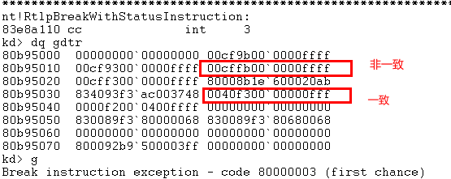
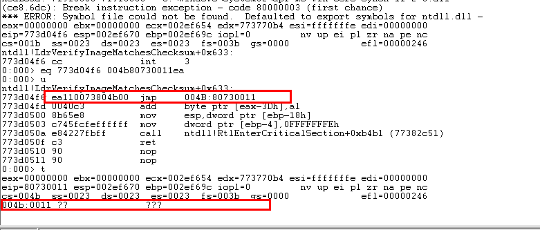

1 拆分段选择子
2 查表得到段描述符，四种情况可以跳转:代码段、调用门、TSS任务段、任务门
3 权限检查
如果是非一致代码段，要求:CPL==DPL&&RPL<=DPL
如果是一直代码段，要求:CPL>=DPL
4 加载段描述符：通过上面的权限检查后，CPU会将段描述符加载到CS段寄存器中
5 代码执行：CPU将CS.Base+Offset的值写入EIP然后执行CS:EIP处的代码，段间跳转结束。
题外话：jmp能跳转到其他地方，那为什么还要有jmp far呢？
因为不同的代码段有权限的限制，也就是Attribute，所以需要使用jmp far来修改权限。
//非一致代码段
00cffb00`0000ffff cpl=3 rpl=0/3
11011 cs=1b
//一致代码段
00cfff00`0000ffff cpl=3 dpl=0/3
10010 11/00 cs=4b/40

此为gdt表
上图为非一致代码段实验。

上图为一致代码段实验
(1)非一致代码段(windows只使用了非一致代码段)
只允许同级访问
绝对禁止不同级别的访问:内核态不允许访问用户态，用户态也不允许访问内核态。
（2）一致代码段
特权级高的指令不允许访问特权级低的数据：核心态不允许访问用户态
特权级低的指令可以访问特权级高的数据，但特权级别不会变
段间跳转的时候，无论目标代码段是一致还是非一致，CPL都不会变，如果要提升CPL权限，只能通过调用门